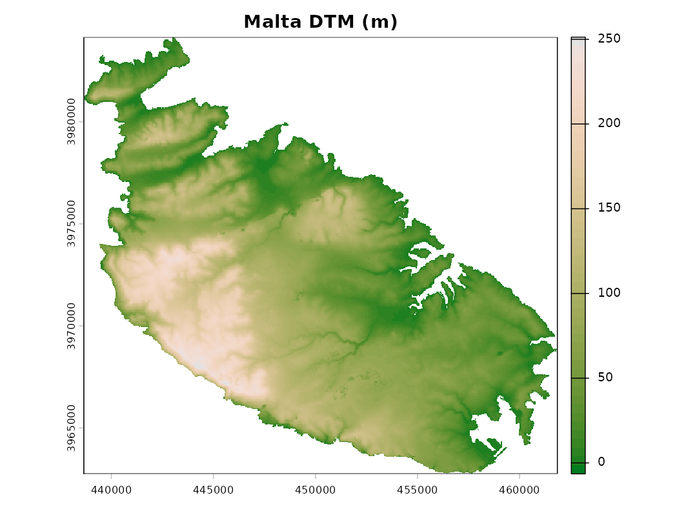
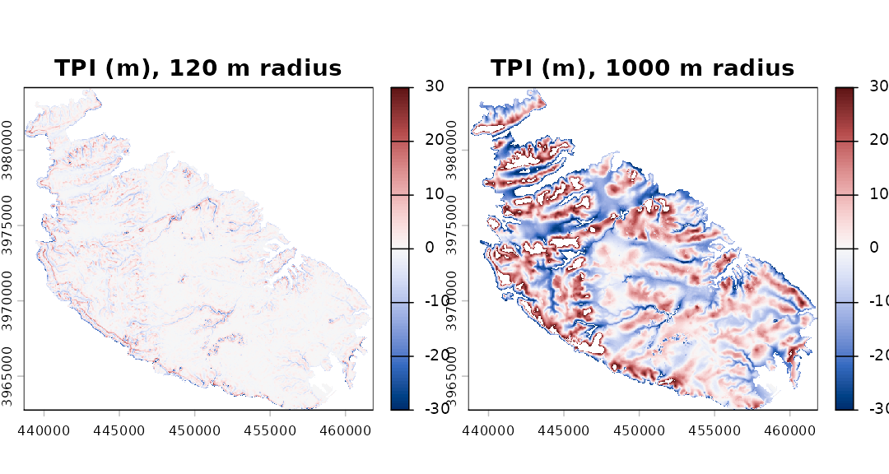
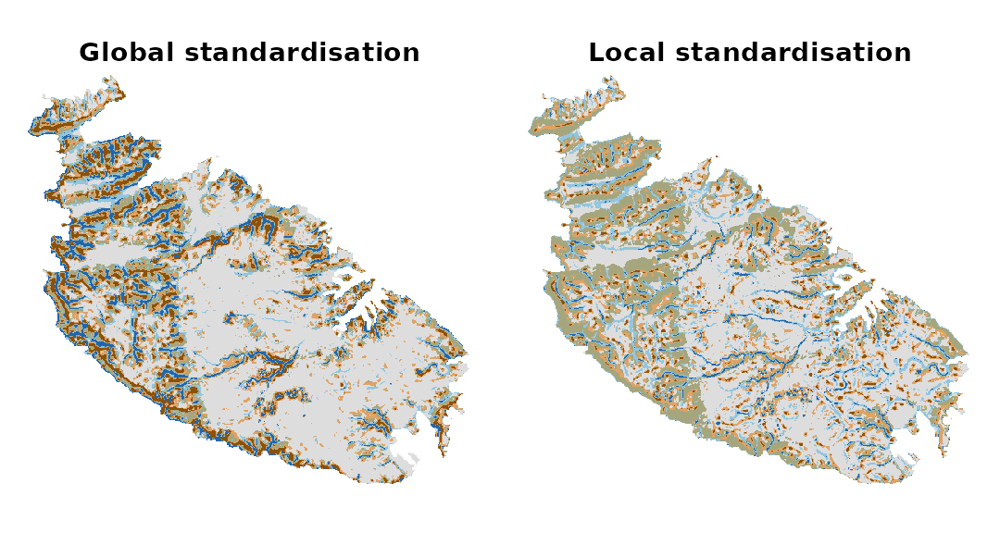
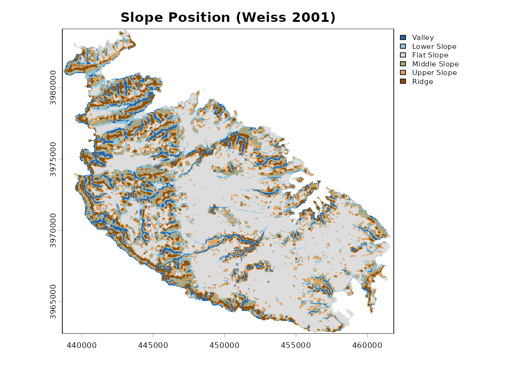
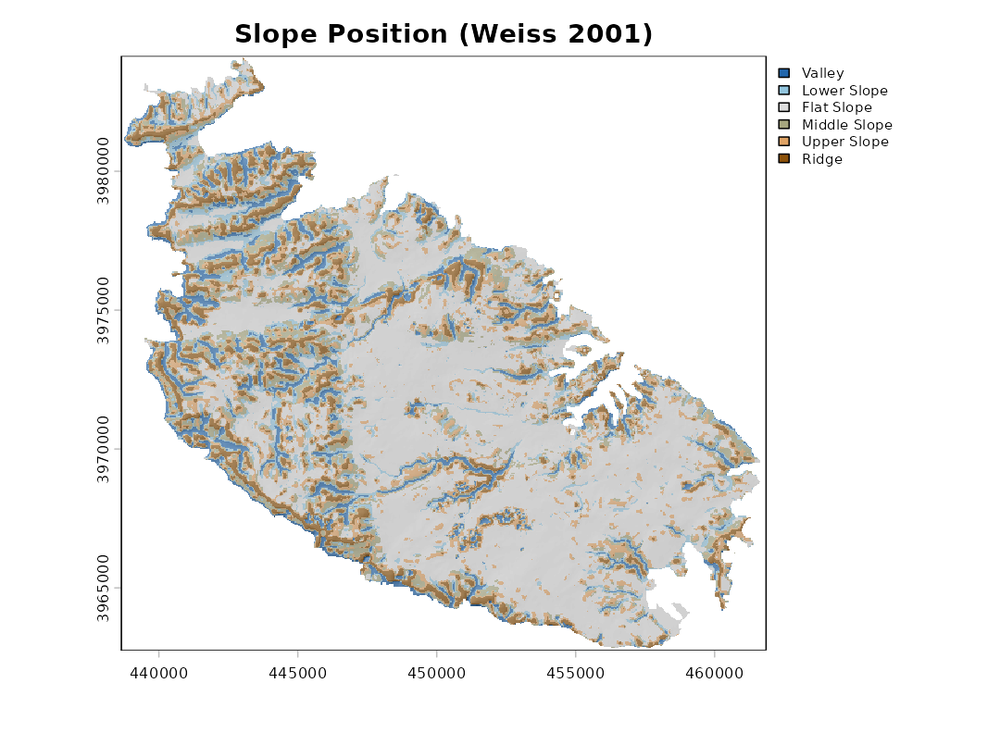
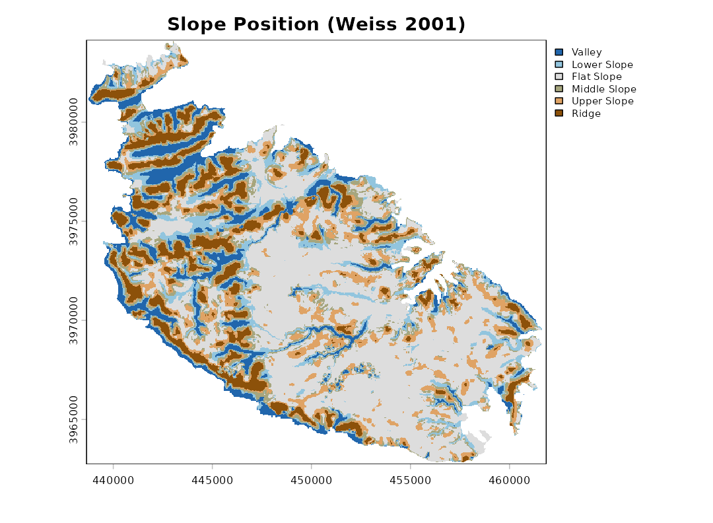
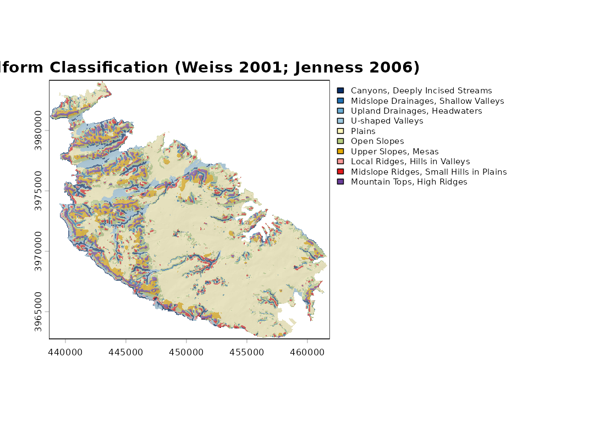
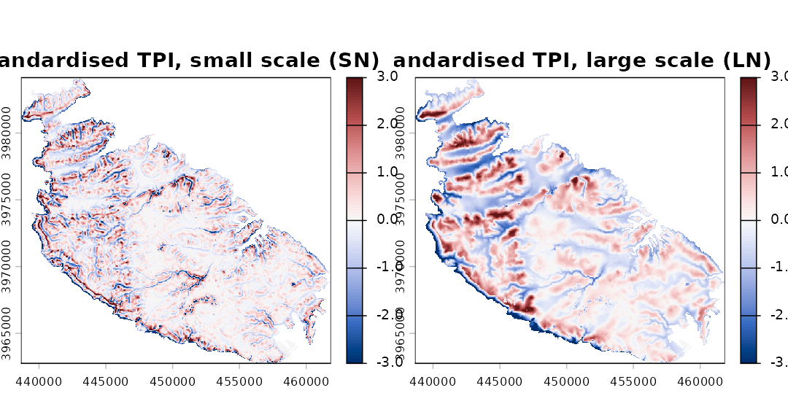
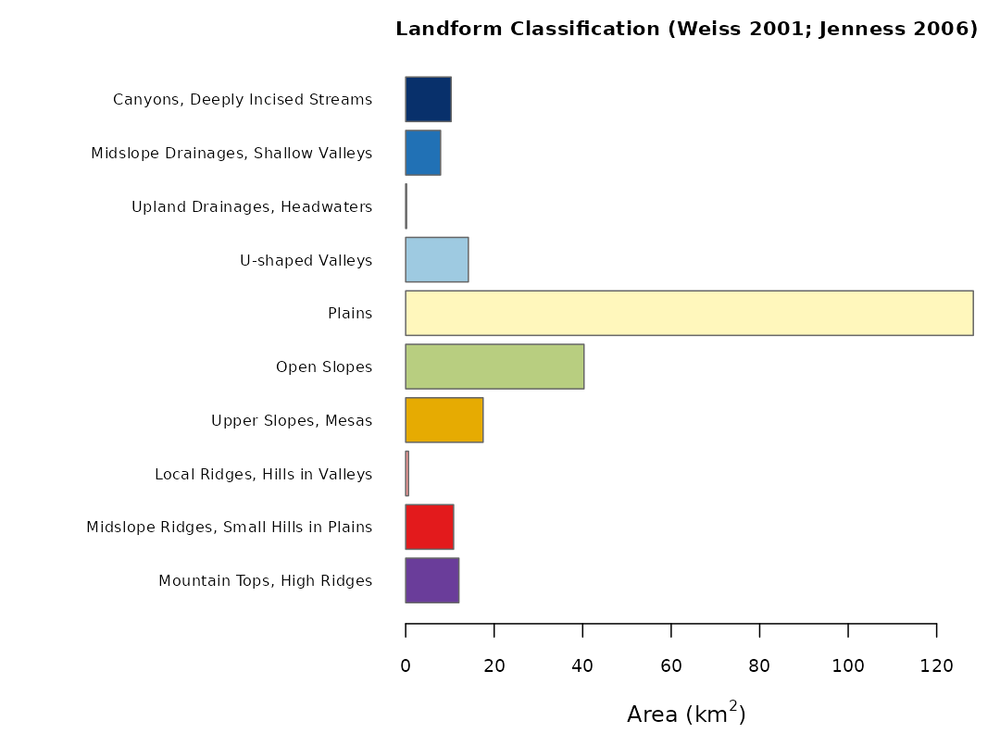
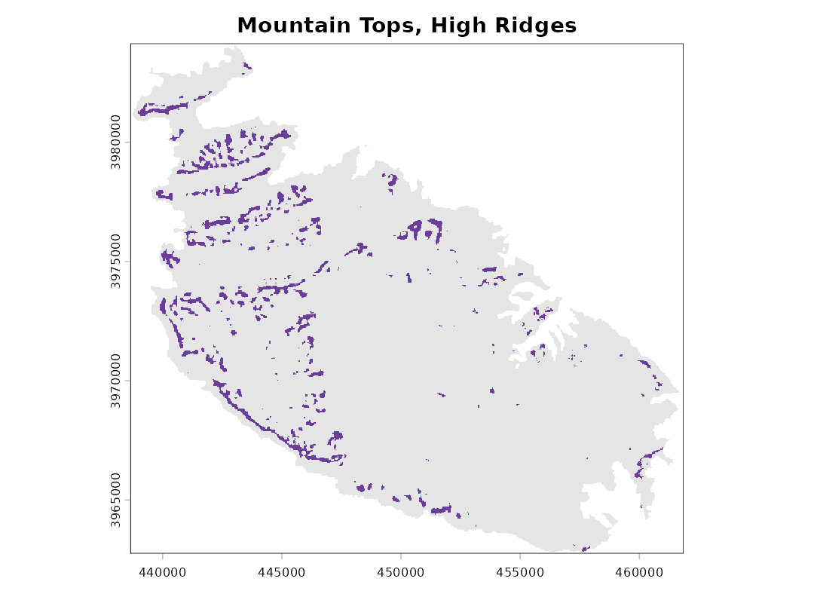

Landform classification with the Topographic Position Index
Gianmarco Alberti (University of Malta)
landform.RmdWhat the package does
The Topographic Position Index (TPI) compares the elevation of each cell of a digital terrain model (DTM) with the mean elevation of the cells around it (Guisan et al. 1999; Weiss 2001). Positive values mean that the cell is higher than its surroundings (a ridge or a hilltop), negative values that it is lower (a valley bottom), and values near zero that it is either on flat ground or half-way up a slope; slope is used to tell these two apart.
landform implements the two classifications proposed by
Weiss (2001) and made popular by Jenness’s TPI extension for ArcView
(Jenness 2006):
- the Slope Position Classification, six classes from one TPI scale;
- the Landform Classification, ten classes from a small and a large TPI scale.
The package has three functions: landform(), which
performs the classifications; tpi(), which returns the TPI
surface itself; and malta_dtm(), which loads the sample DTM
used below.
The sample data
The DTM covers the island of Malta at 40 m resolution, with the sea
coded as NA.
library(landform)
library(terra)
#> terra 1.9.50
dem <- malta_dtm()
dem
#> class : SpatRaster
#> size : 535, 580, 1 (nrow, ncol, nlyr)
#> resolution : 40, 40 (x, y)
#> extent : 438651.4, 461851.4, 3962750, 3984150 (xmin, xmax, ymin, ymax)
#> coord. ref. : ED50 / UTM zone 33N (EPSG:23033)
#> source : malta_dtm_40.tif
#> name : elevation
plot(dem, col = hcl.colors(50, "Terrain 2"), main = "Malta DTM (m)")
The Topographic Position Index
The TPI depends entirely on the size of the neighbourhood: the same
point can be a ridge with respect to its immediate surroundings and part
of a valley floor at a broader scale. The neighbourhood is set by
scale, interpreted either as the width of a square window
in cells (units = "cells", the default) or as a radius in
map units (units = "map"; metres for longitude/latitude
rasters). The window can be square, circular or annular
(shape).
t_small <- tpi(dem, scale = 120, units = "map", shape = "circle", std = "none")
t_large <- tpi(dem, scale = 1000, units = "map", shape = "circle", std = "none")
rng <- c(-30, 30)
plot(c(t_small, t_large), range = rng,
col = hcl.colors(100, "Blue-Red 3"),
main = c("TPI (m), 120 m radius", "TPI (m), 1000 m radius"))
Standardisation
Weiss’s thresholds are expressed in standard deviations, so the TPI has to be standardised first. Two approaches are available, and they can lead to noticeably different maps.
-
Global (
std = "global", the default). The TPI is turned into z-scores using the mean and standard deviation of the TPI over the whole raster. This is the method of Weiss (2001) and Jenness (2006): a value of 1 means “one standard deviation above the typical TPI of this landscape”. -
Local (
std = "local"). The TPI of each cell is divided by the standard deviation of elevation in its own neighbourhood, which is the “deviation from mean elevation” (DEV) of Wilson and Gallant (2000). De Reu et al. (2013) found it better suited to landscapes in which relief varies greatly from place to place. Its drawback is that in nearly flat areas the local standard deviation is tiny, so that small irregularities of the DTM (or plain noise) become large standardised values. This was the only method available inlandformup to version 0.2.
The difference is easiest to see on the plateaus and plains of eastern Malta:
g <- landform(dem, scale = 9, plot = FALSE)
l <- landform(dem, scale = 9, std = "local", plot = FALSE)
par(mfrow = c(1, 2))
plot(g$classes, main = "Global standardisation", legend = FALSE,
mar = c(1, 1, 2, 1), axes = FALSE)
plot(l$classes, main = "Local standardisation", legend = FALSE,
mar = c(1, 1, 2, 1), axes = FALSE)
data.frame(class = g$stats$class,
global = round(g$stats$percent, 1),
local = round(l$stats$percent, 1))
#> class global local
#> 1 Valley 7.7 3.2
#> 2 Lower Slope 8.3 11.7
#> 3 Flat Slope 48.7 43.0
#> 4 Middle Slope 13.3 24.4
#> 5 Upper Slope 12.2 14.3
#> 6 Ridge 9.7 3.4With local standardisation the flat areas are broken up into a mosaic of valleys and ridges a few cells across. Which method is preferable depends on the landscape and on the question; when in doubt, it is worth running both.
Slope Position Classification
sp <- landform(dem, scale = 9)
sp
#> <landform> Slope Position Classification (Weiss 2001)
#> neighbourhood : scale = 9 in cells (window width) - square (focal cell excluded)
#> TPI standard. : global
#> classified : 151209 cells, 242.108 km2
#>
#> code class area_km2 percent
#> 1 Valley 18.525 7.7
#> 2 Lower Slope 20.158 8.3
#> 3 Flat Slope 117.906 48.7
#> 4 Middle Slope 32.303 13.3
#> 5 Upper Slope 29.647 12.2
#> 6 Ridge 23.569 9.7The thresholds (Weiss 2001), with z the standardised TPI and s the slope in degrees, are:
| Class | Rule |
|---|---|
| 1 Valley | z ≤ -1 |
| 2 Lower Slope | -1 < z ≤ -0.5 |
| 3 Flat Slope | -0.5 < z < 0.5 and s ≤ 5 |
| 4 Middle Slope | -0.5 < z < 0.5 and s > 5 |
| 5 Upper Slope | 0.5 ≤ z ≤ 1 |
| 6 Ridge | z > 1 |
All three thresholds can be changed with tpi.thr and
slope.thr.
The classes can be drawn semi-transparently over a hillshade, which helps relate them to the relief:
plot(sp, hillshade = TRUE)
Since the classification depends on the scale, a broader neighbourhood picks out broader features:
sp_broad <- landform(dem, scale = 600, units = "map", shape = "circle")
Landform Classification
The Landform Classification combines a small-neighbourhood TPI
(sn) and a large-neighbourhood TPI (ln), each
split into low (≤ -1), middle and high (≥ 1) values; plains and open
slopes are separated by slope.
lf <- landform(dem, class.type = "landform.classification",
sn = 200, ln = 1000, units = "map", shape = "circle",
hillshade = TRUE)
| Class | SN | LN |
|---|---|---|
| 1 Canyons, Deeply Incised Streams | ≤ -1 | ≤ -1 |
| 2 Midslope Drainages, Shallow Valleys | ≤ -1 | middle |
| 3 Upland Drainages, Headwaters | ≤ -1 | ≥ 1 |
| 4 U-shaped Valleys | middle | ≤ -1 |
| 5 Plains (slope ≤ 5) | middle | middle |
| 6 Open Slopes (slope > 5) | middle | middle |
| 7 Upper Slopes, Mesas | middle | ≥ 1 |
| 8 Local Ridges, Hills in Valleys | ≥ 1 | ≤ -1 |
| 9 Midslope Ridges, Small Hills in Plains | ≥ 1 | middle |
| 10 Mountain Tops, High Ridges | ≥ 1 | ≥ 1 |
The two standardised TPI surfaces on which the classification rests can be plotted directly (the colour scale is capped at ±3 standard deviations):
plot(lf, what = "tpi")
What landform() returns
landform() returns an object of class
"landform", a list holding:
-
classes: a categoricalSpatRasterof the classes, with class names and colours attached; -
tpi: the raw and standardised TPI layers; -
slope: the slope (degrees); -
stats: the descriptive statistics of each class; -
demandparams: the input DTM and the settings used.
summary(lf)
#> code class cells area_km2 percent
#> 1 1 Canyons, Deeply Incised Streams 6419 10.2776930 4.24508506
#> 2 2 Midslope Drainages, Shallow Valleys 4925 7.8856255 3.25706859
#> 3 3 Upland Drainages, Headwaters 126 0.2017418 0.08332717
#> 4 4 U-shaped Valleys 8849 14.1684167 5.85210456
#> 5 5 Plains 80119 128.2830591 52.98586948
#> 6 6 Open Slopes 25170 40.3008156 16.64579694
#> 7 7 Upper Slopes, Mesas 10931 17.5020090 7.22900727
#> 8 8 Local Ridges, Hills in Valleys 395 0.6324459 0.26122465
#> 9 9 Midslope Ridges, Small Hills in Plains 6763 10.8285440 4.47260786
#> 10 10 Mountain Tops, High Ridges 7512 12.0277066 4.96790844
#> mean_elev mean_slope
#> 1 57.11573 9.803690
#> 2 85.13888 8.740135
#> 3 130.32629 10.469815
#> 4 54.93890 6.371109
#> 5 72.88148 2.397099
#> 6 81.50629 8.873848
#> 7 137.34029 5.463080
#> 8 94.19899 14.683089
#> 9 84.16005 8.136700
#> 10 134.89600 7.425783
plot(lf, what = "area")
Areas are computed from the actual size of each cell
(terra::cellSize()), so they are correct also for rasters
in longitude/latitude. Cells for which slope cannot be computed (the
outer rim of the raster and the cells along the coast) are left
unclassified.
Individual classes can be extracted as separate presence/absence
layers with class_layers(), for instance to compute
distances from ridges or to use the classes as covariates:
layers <- class_layers(lf)
names(layers)
#> [1] "Canyons, Deeply Incised Streams"
#> [2] "Midslope Drainages, Shallow Valleys"
#> [3] "Upland Drainages, Headwaters"
#> [4] "U-shaped Valleys"
#> [5] "Plains"
#> [6] "Open Slopes"
#> [7] "Upper Slopes, Mesas"
#> [8] "Local Ridges, Hills in Valleys"
#> [9] "Midslope Ridges, Small Hills in Plains"
#> [10] "Mountain Tops, High Ridges"
plot(layers[["Mountain Tops, High Ridges"]], legend = FALSE,
col = c("grey90", "#6A3D9A"), main = "Mountain Tops, High Ridges")
Since classes is an ordinary SpatRaster, it
can be saved with terra::writeRaster() and opened in any
GIS.
Reproducing results from landform 0.2
Version 0.3 changed the default standardisation from local to global and, by default, excludes the focal cell from the neighbourhood mean. To reproduce results obtained with earlier versions, use:
landform(dem, scale = 9, std = "local", centre = TRUE)The only remaining differences are that cells on the outer rim of the raster are now always left unclassified, and that cells whose standardised TPI was exactly 0.5 (previously left without a class) are now Upper Slope.
References
De Reu, J., Bourgeois, J., Bats, M., Zwertvaegher, A., Gelorini, V., De Smedt, P., Chu, W., Antrop, M., De Maeyer, P., Finke, P., Van Meirvenne, M., Verniers, J. and Crombé, P. (2013). Application of the topographic position index to heterogeneous landscapes. Geomorphology, 186, 39-49.
Guisan, A., Weiss, S. B. and Weiss, A. D. (1999). GLM versus CCA spatial modeling of plant species distribution. Plant Ecology, 143, 107-122.
Jenness, J. (2006). Topographic Position Index (tpi_jen.avx) extension for ArcView 3.x, v. 1.2. Jenness Enterprises.
Weiss, A. (2001). Topographic Position and Landforms Analysis. Poster presentation, ESRI User Conference, San Diego, CA.
Wilson, J. P. and Gallant, J. C. (eds) (2000). Terrain Analysis: Principles and Applications. Wiley, New York.